CHEGOU A HORA DOS DELICIOSOS CREPES!!!
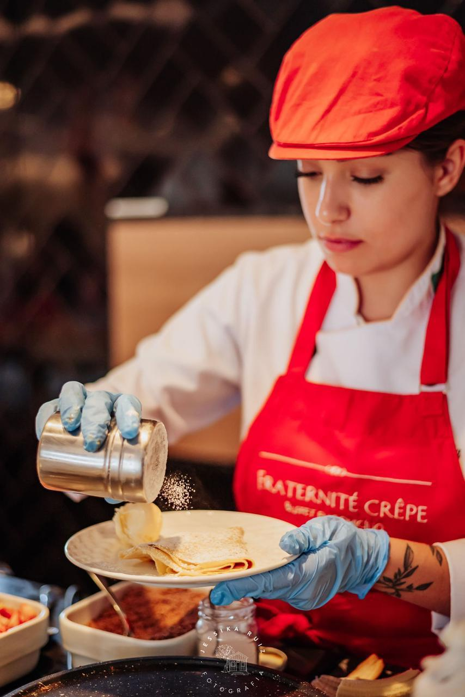
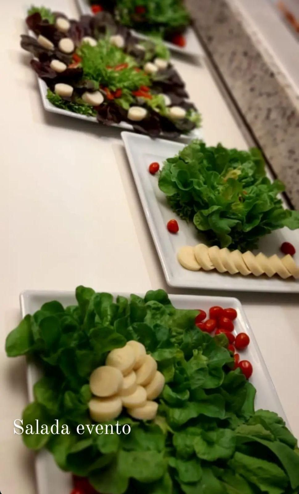
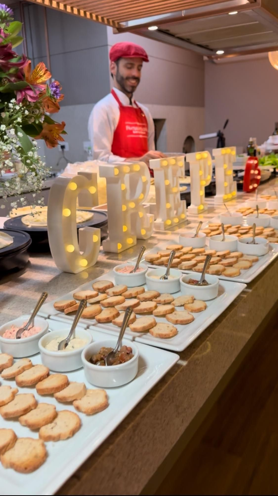
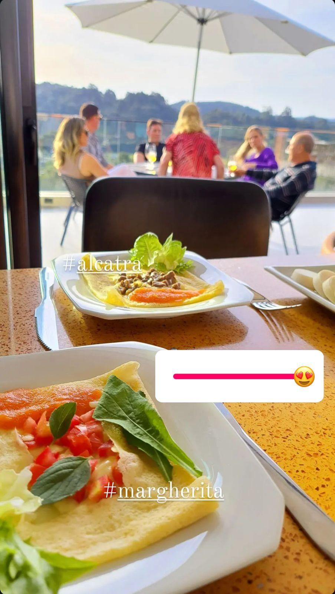
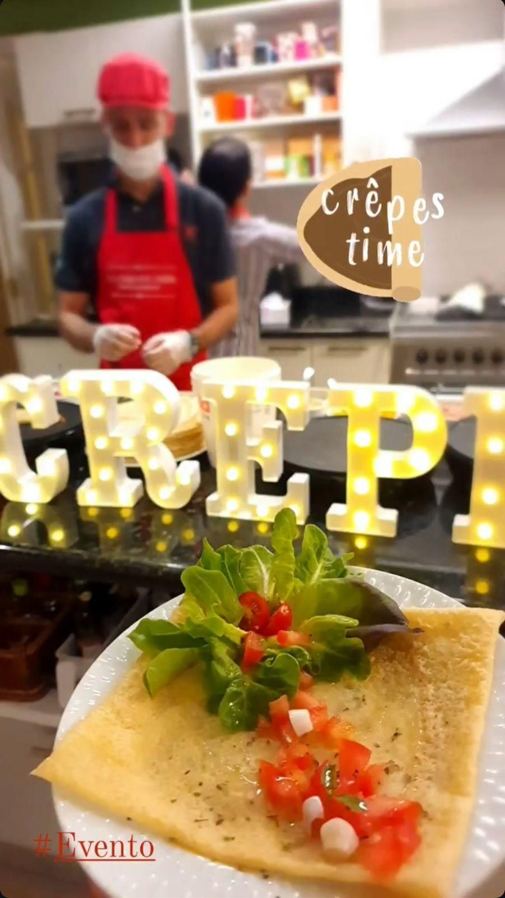
A Dedicação em Servir Bem
Nossa equipe atua com total pontualidade e organização, seguindo o horário combinado. O atendimento dura quatro horas: uma para preparação e montagem, e três horas de serviço durante o evento. Oferecemos toda a estrutura necessária e profissionais qualificados, sempre atenciosos e ágeis. Cada etapa é planejada para que seu evento seja único, agradável e inesquecível, com excelência em cada detalhe.
Contamos com uma estrutura completa que oferece:
- Chapa para o preparo dos crepes;
- Rechaud para os molhos quentes;
- Potes para os recheios;
- Mesa ou bancada, caso necessário.
Serviços extras
Os serviços extras são opcionais e cobrados à parte, oferecendo mais praticidade, conforto e personalização ao seu evento. Disponibilizamos opções adicionais conforme a sua necessidade, sempre com o mesmo cuidado e qualidade da nossa equipe. Seja para melhorar a logística, a ambientação ou o atendimento, temos soluções que tornam seu momento ainda mais especial.
Entre as opções disponíveis, podemos providenciar:
- Garçom;
- Copeira;
- Pratos, copos e talheres;
- Chopp;
Estrutura Necessária no Local
Itens necessários no local para o perfeito atendimento:
- Uma pia próxima e espaço para montarmos nossa estrutura.
- Microondas;
Produtos que utilizamos
Para garantir que cada evento seja uma experiência gastronômica excepcional, a Fraternité Crêpe seleciona cuidadosamente verduras, frutas e carnes frescas, compradas especialmente para cada ocasião. Trabalhamos apenas com fornecedores de confiança e marcas renomadas, assegurando ingredientes de altíssima qualidade que refletem sabor, frescor e sofisticação em cada preparo.
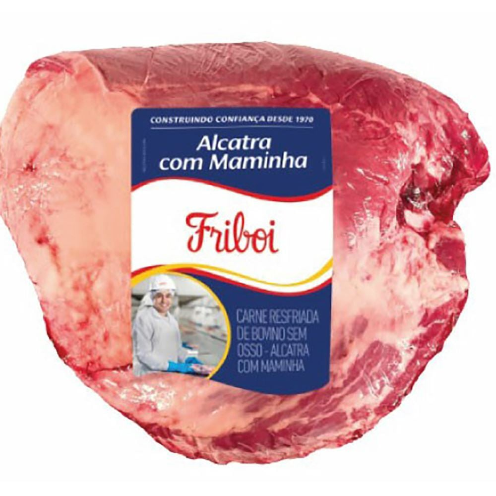
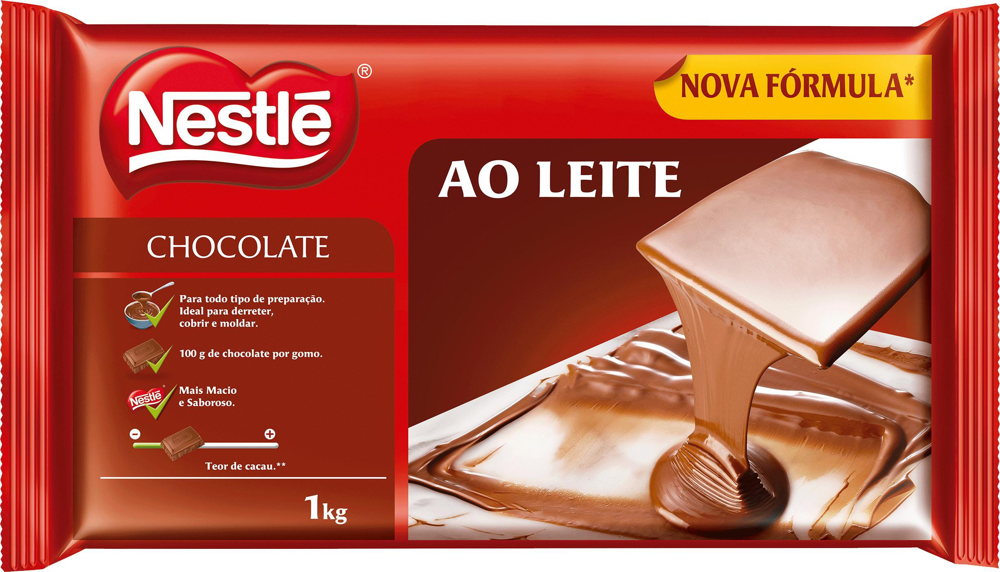
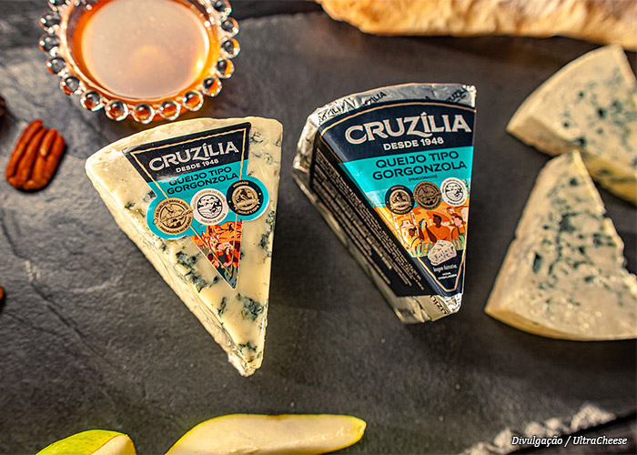
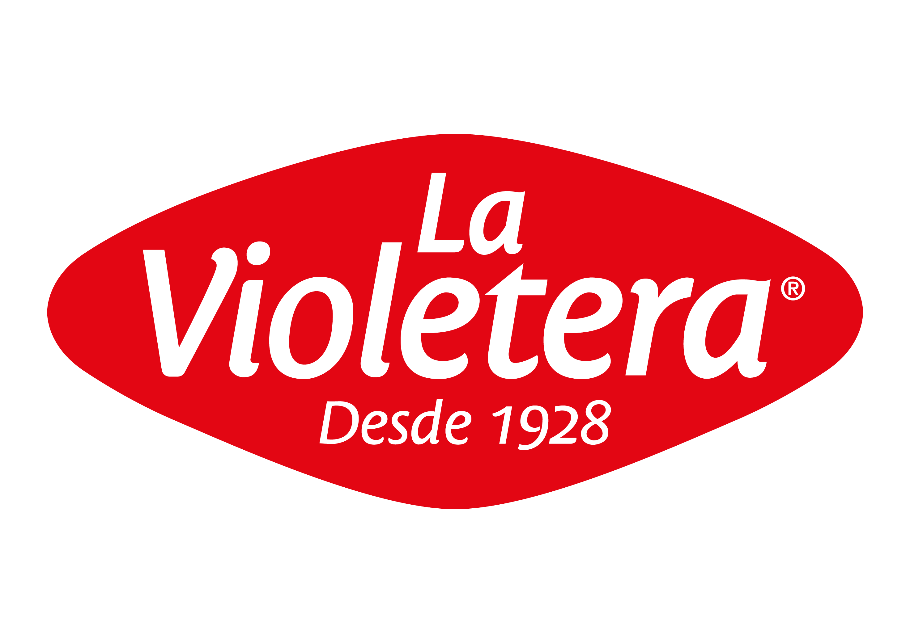
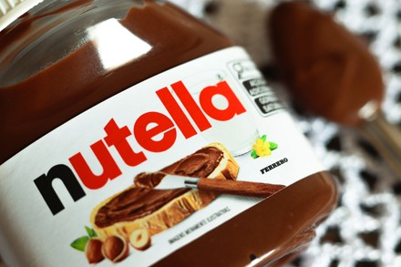
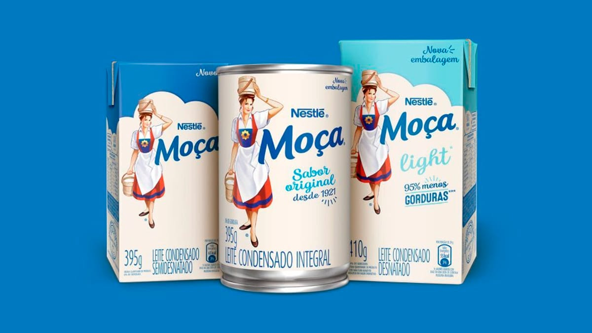
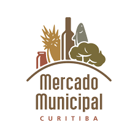